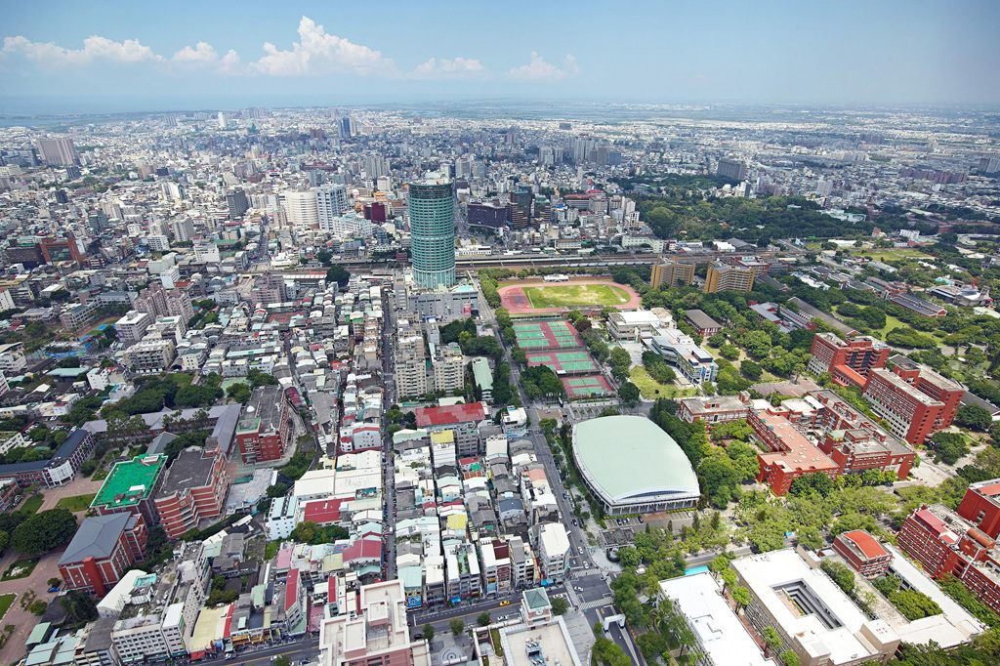

타이난 첫 이케아, 난팡 상권 진출…"교통 혼잡" 우려도
대만 남부 타이난에 첫 대형 가구점이 들어선다. 상권 활성화 기대와 함께 교통 혼잡을 우려하는 목소리가 함께 나온다.
정가호 기자 · 2026.06.18
橋도시·경제

연합보는 타이난 첫 이케아 매장이 난팡(南紡) 상권에 진출한다고 전했다. 지역 상권에 활기를 더할 것이라는 기대가 크지만, 일부 의원은 주변 교통 혼잡이 심해질 수 있다며 대책을 촉구했다.
광고 문의 · 300×250대형 유통시설은 집객 효과로 상권을 키우는 한편, 차량 통행을 늘려 인근 도로에 부담을 준다. 주차·진출입 동선과 대중교통 연계가 성패를 가르는 요소로 꼽힌다.
지역 사회는 일자리와 소비 진작이라는 이점과 교통·생활환경이라는 비용을 함께 따진다. 사전 교통영향 평가와 보완책이 중요하다는 지적이다.
華橋時報는 도시 개발과 생활환경의 균형이라는 관점에서 이 사안을 전한다. 상권 변화는 현지 화인 자영업자에게도 기회이자 과제다.
출처·참고 (사실 확인용 — 본문은 직접 재작성)
· 聯合報
· 聯合報